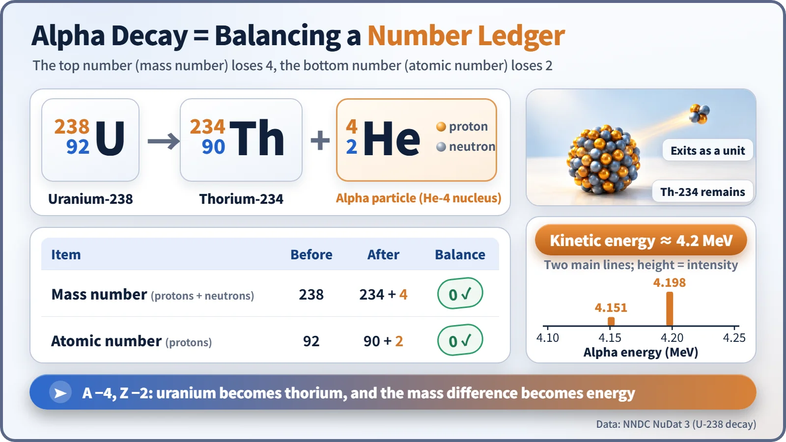
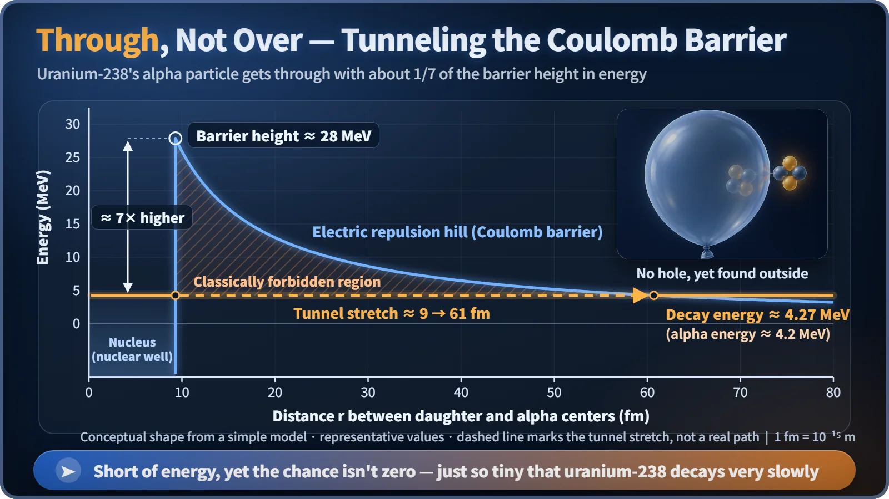

Nuclear & Radiation Basics · 012
A Bead That Slips Through a Balloon's Skin — How Alpha Decay Lets a Helium Nucleus Escape
A helium-4 nucleus leaves with a set energy and tunnels through a Coulomb barrier it could never climb.
In alpha decay a heavy nucleus throws out a helium-4 nucleus (2 protons + 2 neutrons), so its mass number drops by 4 and its atomic number by 2. The alpha particle leaves with a nearly fixed energy and gets through a Coulomb barrier about seven times higher than its own energy by quantum tunneling. Outside the body a sheet of paper stops it; inside the body it is a different matter. [1]
Alpha decay lives on your ceiling
An ionization-type smoke detector contains about 0.3 micrograms of americium-241, lighter than a speck of dust, and it undergoes alpha decay nonstop. The particles it emits ionize the air between two electrodes so that a minute current flows. When smoke drifts in, it blocks those particles, the current drops, and the alarm sounds. The detector doesn't see smoke; it feels the current falling. [2]
It's a helium nucleus: a team of four
An alpha particle is 2 protons and 2 neutrons bound tightly together: the nucleus of helium-4. With no electrons it isn't a helium atom; only after it stops in matter does it pick up electrons and become helium gas. The four nucleons don't leave one by one; a ready-made chunk leaves all at once. Helium-4 is an unusually tightly bound four-nucleon group, so pulling it off in one go still leaves the energy books in the black, which is why alpha decay mainly happens in heavy nuclei, roughly those heavier than bismuth, where proton repulsion has piled up.
The most famous example is uranium-238, more than 99% of natural uranium: uranium-238 → thorium-234 + alpha particle (about 4.2 MeV).

Mass number: 238 = 234 + 4. Atomic number: 92 = 90 + 2. The mass number drops by 4 and the atomic number by 2, so uranium has become thorium. The energy comes from the tiny mass difference before and after, via E=mc², and it sends the alpha particle off at about 5% of the speed of light. [1]
Same energy every time: the alpha fingerprint
Most uranium-238 alpha particles (about four in five) carry 4.198 MeV, and nearly all the rest 4.151 MeV, so a detector shows a few sharp lines rather than a broad smear. With only two products, the daughter and the alpha particle, there is only one way to share the momentum. Americium-241 gives 5.486 MeV instead, so alpha energies work like fingerprints for identifying nuclides. Beta decay, with three products, behaves differently.
What happens at the balloon's skin
To leave, an alpha particle must get past a wall at the nucleus's edge: inside, the nuclear force holds on; just outside, positive charges repel strongly. The hill between is the Coulomb barrier. For uranium-238 it stands about 28 MeV high, while the alpha particle has only 4.2 MeV. By classical physics it could never get out. [3]
Picture a taut balloon with a small bead rolling inside, far too weak to break the rubber. Very, very rarely, the bead turns up outside, with the balloon intact and no hole.

This is the tunnel effect, explained in 1928 by Gamow and others: particles behave like waves, so there is a very small probability of finding one beyond the wall. The alpha particle goes through, not over. The probability is so small that a uranium-238 nucleus hits the wall countless times before one leaks out, giving a half-life of about 4.5 billion years; a slightly larger alpha energy thins the wall and makes decay enormously faster. And "popping a balloon" doesn't mean an explosion: one nucleus quietly sends out one small chunk, with no flash, no chain reaction and no hole.
Stopped by paper, but not harmless inside the body
An alpha particle is heavy, about 7,300 times an electron, and carries a +2 charge, so it loses energy quickly. It travels a few centimeters in air and is stopped by a sheet of paper or the dead outer layer of skin, about 0.07 mm thick; that is also why it can't escape a smoke detector. Outside the body, the risk is small. [4]
Inhaled or swallowed, an alpha emitter dumps its energy into cells within a very small range. The ICRP counts alpha particles as 20 times as damaging as gamma rays for the same absorbed energy. So managing alpha emitters is less about blocking them than about keeping them out of the body, which is also why you shouldn't take a smoke detector apart. [5]
Key takeaways
Alpha decay is a heavy nucleus throwing out a helium-4 nucleus, lowering its mass number by 4 and its atomic number by 2; the chunk carries a set energy and tunnels through a barrier far higher than that energy. It stops at a sheet of paper outside the body but can't be ignored inside it.